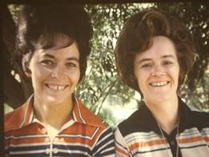

Chapter 23 – FRIENDS
GOOD FRIENDS FROM OGDEN, MOUNT FORT WARD
We have had many friends while living in our several wards. Some are very special. Bishop and June Moulton will always hold a place in our hearts. They are very spiritual, humble people. They were like our second parents. Ken was Delmar’s first counselor in the bishopric. Larry was the 2nd counselor. We loved their children also. I taught three of their daughters in YWMIA – Luwana, Ardel, and Debra. Myrna was the 2nd oldest in the family and we became good friends and since she was a beautician, I would go to her, and while she was doing my hair, we would have wonderful visits. Delmar & June were wonderful parents, and wonderful friends. We visited them occasionally whenever we lived close enough to do so.
 Our dearest truest friends are Larry and Tammy Braithwaite. Tammy is just like a sister to me, except as she has often said, we never fight like sisters do. We were together a lot, either just the two of us with our children or with our husbands or with our families. We ate at each other’s homes, played games, went on trips together, went camping together a lot, we had so much fun together. Either she or I would call and say “What are you doing today?” And then we would say:“Let’s take the children and go to the park, or get a sitter and go shopping, or let’s bake together today.” We had so much in common that we could talk about anything. Pat Bradfield & I were always best friends, but I think Tammy & I were even closer, we really enjoyed being together.
 We were good friends with Pete and Grace Mooney.
Pete was so much fun. He was really a character. We enjoyed getting together
with them. Sometime after we moved, Pete was put in the Bishopric. We went
over to the ward as they were having something special - missionary farewell or
something (can’t remember for sure), anyway, we were five or so minutes late
and when we walked in we saw a row in the middle isle partway up in the chapel
and as we walked up there, Pete was conducting and he said “Well, if it isn’t
our good friends Ken & Mae Browning and their family. Wow, you’ve got a
big family now, don’t you? You take up an entire row.” Everyone chuckled. We
were a little embarrassed, but that was just Pete. Grace had some bad health
problems, and we were saddened to hear that years after we had moved, Pete had
an affair with a younger woman, he couldn’t forgive himself so he took his life.
We were so sorry to hear that.
We were good friends with Pete and Grace Mooney.
Pete was so much fun. He was really a character. We enjoyed getting together
with them. Sometime after we moved, Pete was put in the Bishopric. We went
over to the ward as they were having something special - missionary farewell or
something (can’t remember for sure), anyway, we were five or so minutes late
and when we walked in we saw a row in the middle isle partway up in the chapel
and as we walked up there, Pete was conducting and he said “Well, if it isn’t
our good friends Ken & Mae Browning and their family. Wow, you’ve got a
big family now, don’t you? You take up an entire row.” Everyone chuckled. We
were a little embarrassed, but that was just Pete. Grace had some bad health
problems, and we were saddened to hear that years after we had moved, Pete had
an affair with a younger woman, he couldn’t forgive himself so he took his life.
We were so sorry to hear that.
Our other goodfriends are Bob & Pauline Hein, and John and Linda Willerton. When we were in the Mount Fort Ward, we got together in the Young Marrieds Program and had a lot of fun together. Since we enjoyed each other’s company, we started going to the temple together, getting together for family home evenings and eating at each other’s homes. John & Linda moved into a home in Syracuse. Bob & Pauline bought a home in Salt Lake, we moved to Clearfield and Larry & Tammy to Liberty. We still get together once or twice a month at each other’s homes for family night and Sunday dinners. Now Larry & Tammy & Ken & I have moved to Arizona, but we write to the others and hope to get together with them occasionally. We have been fortunate to have wonderful friends. I am also thankful for my wonderful brothers and sister, and my wonderful sisters-in-law. Jean and I have been very close and I miss not being able to get together like we used to, but we write and get together whenever Ken and I get up. John & Linda Willerton are the first couple in the picture on the left, and Pauline & Bob Hein are just behind them. The same is true on the picture on the right. Then Tammy &Larry Braithwaite. The Arvey’s are the other couple are the left picture and then me as Ken is taking the picture. I am taking the picture on the right and Hal & Jean are sitting by Ke.
GOOD FRIENDS FROM CLEARFIELD – CLEARFIELD 1ST WARD
Bishop and Shirley Murdock will always be good friends. Ken loved being Kent’s counselor. I write to Ione & Carolyn, who were my counselors when I was Primary President in Clearfield and we go out for lunch when we are living close by. RaNae and I call or get together when we can also. I think a lot of them, they are great friends. RaNae & Richard are the second couple from the left – next to Bishop & Shirley. I am on the end, holding our son, David, and Mary and Dale Cottrell are next to me. I don’t remember who the couple on the other end are.
Our friends from the other wards and long time friends are put in other chapters, mainly they are in the chapters when we moved to their neighborhoods and wards.